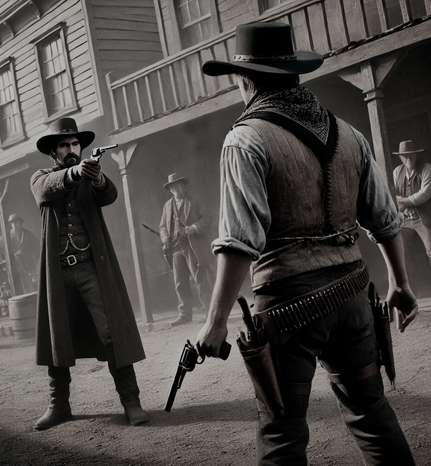

REGRAS DE KANSAS CITY!
Este documento é a referência final para as regras, que devem ser seguidas acima de qualquer instrução dada individualmente pelos membros da equipe.
Somente jogadores com 18 anos ou mais estão autorizados a participar do servidor!
Não toleramos nenhum ato de assédio, abuso, discriminação ou preconceito, incluindo, mas não se limitando a, atitudes baseadas em raça, cor, religião ou gênero.
Qualquer violação deste princípio, ou qualquer conduta que contrarie o artigo 140 do código penal brasileiro, resultará em exclusão permanente da nossa comunidade.
CONHEÇA UM POUCO MAIS SOBRE NOSSO CONDADO
Nosso condado é fruto de um esforço coletivo para criar uma experiência única para os jogadores, por isso damos grande valor à qualidade do RP.Orgulhamo-nos de ser um ambiente inovador, com scripts exclusivos, facções personalizadas e sistemas de cultivo únicos, sempre buscando aprimorar e expandir as possibilidades do jogo.
Evoluímos constantemente, aprendendo e adaptando-nos para proporcionar um servidor que honra e valoriza sua comunidade de jogadores.
Estamos comprometidos em tornar nosso condado acessível a todos, abrindo as portas para quem procura uma experiência de roleplay autêntica e de alta qualidade.
NORMAS PARA O USO DO Discord
A falta de respeito para com a equipe do servidor, seja em canais de voz ou de texto no Discord, será rigorosamente sancionada.É estritamente proibido qualquer ato de nudez, discurso de ódio, ofensas, assédio, racismo, bullying e violência.
Não se deve compartilhar malware ou qualquer software nocivo, bem como urls suspeitas ou abusar do uso de caps lock.
O respeito mútuo é essencial: ofender outros jogadores é inaceitável.
Piadas e brincadeiras devem ser respeitosas; as ofensivas não serão toleradas.
Evite sobrecarregar os canais com mensagens repetitivas ou desnecessárias.
Manter a privacidade é fundamental: não publique informações pessoais de terceiros sem permissão.
A divulgação de outros servidores é proibida no Discord, ou a promoção destes entre nossos jogadores sem prévia autorização, resultará em banimento permanente.
Para manter a ordem e a identificação clara, é obrigatório que todos usem seus nomes reais ou apropriados dentro do jogo, como por exemplo, "Fulano [R]".
O servidor do Discord está aberto e acessível a todos independentemente de sua identidade.
É fundamental utilizar os canais de sugestões, reports e similares para que melhorias para o servidor possam ser criadas.
O canal "provas" é parte integrante do roleplay; informações publicadas ali devem permanecer por até 24 horas.
Ao participar no condado, você concorda que sua imagem e voz poderão ser usadas dentro do Discord para propósitos relacionados às regras de conduta. Violações dessas regras resultará em banimento temporário ou definitivo, sem aviso prévio.
REGRAS CONTRA AÇÕES ANTI-ROLEPLAY
Qualquer tipo de roleplay que envolva assédio, abuso sexual, racismo, preconceito, homofobia, xenofobia, suicídio e outras ações extremas é expressamente proibido.Não se deve instigar outros jogadores com provocações excessivas ou forçar situações que saiam do escopo aceitável do roleplay.
A integridade no ambiente de trabalho deve ser mantida; qualquer corrupção está sujeita a banimento.
AMOR À VIDA
É essencial tratar a vida no roleplay com o máximo respeito, agindo como se cada vida fosse única e irrecuperável. Portanto, ações que coloquem a vida em risco desnecessário são proibidas.Note que, embora nosso roleplay seja ambientado no ano de 1899, e métodos históricos de defesa possam ser empregados, a regra de valorização da vida prevalece acima de tudo.
No entanto, é essencial aplicar o senso comum para avaliar as situações de risco. Por exemplo, se você se encontrar sozinho e for abordado por duas pessoas, lembre-se de que você tem a opção de reagir ou de se retirar da situação.
RDM E HDM
Rdm, ou "random deathmatch", refere-se ao ato de eliminar outros jogadores sem motivo justo ou provocação. Esta prática é estritamente proibida.Hdm, ou "horse deathmatch", é o uso de cavalos ou veículos como instrumentos para eliminar ou causar danos a outros jogadores, o que também é inaceitável.
COMBAT LOGGING
Abandonar o jogo ou desconectar-se intencionalmente durante uma interação ativa, seja como parte direta ou indireta, é conhecido como combat logging e é considerado uma conduta inapropriada.Se por acaso você se desconectar devido a problemas técnicos ("crash") ou perder a conexão, é esperado que você informe a equipe no canal de #crash-report no Discord e retorne ao jogo o mais rápido possível para continuar sua participação no roleplay sem retomar ações prévias.
Não é permitido o "deslogar" em momentos críticos, como quando está prestes a ser abordado ou durante situações de alta tensão (sequestros, fugas, emboscadas, etc).
METAGAMING
Metagaming é o uso de informações obtidas fora do contexto do jogo (como lives, Discord, etc.) para ganhar vantagens ou afetar as interações dentro do jogo. Este comportamento é proibido.É vedado o compartilhamento ou o recebimento de informações por meio de chats de transmissões ao vivo ou comentários sobre personagens sem que tal conhecimento seja adquirido dentro das regras do jogo.
ABUSO DE BUGS
Explorar bugs em kansas city para obter benefícios ou vantagens sobre outros jogadores é uma conduta proibida e contra as regras de nossa comunidade, passível de banimento.FORÇAR ROLEPLAY
Manipular situações de roleplay para constranger ou pressionar outros jogadores, como provocá-los para incitar conflitos, não é permitido. Nossa comunidade valoriza a espontaneidade e a interação genuína entre personagens.REVENGE KILL
Nossa política é clara: não é aceitável que um jogador, independentemente do seu status dentro do jogo, busque vingança após a morte ou derrota de seu personagem. Isso inclui perseguir bandidos, oficiais ou qualquer outro jogador com intuito de retaliação.Testemunhas ou informações sobre as circunst ncias que levaram à perda de memória ou itens, ou a morte do personagem, não justificam ações de vingança sob nenhuma circunst ncia.
DARK RP
Ações conhecidas como dark RP, que incluem desrespeito à dignidade humana, como assédio, abuso, racismo, homofobia, intoler ncia religiosa, ou qualquer outra forma de discriminação, são estritamente proibidas. Atos como arrastar corpos de forma desrespeitosa, mutilação, tortura ou qualquer ato de violência extrema, especialmente quando usados como instrumentos de vingança ou declarações políticas, são inaceitáveis e resultarão em banimento permanente do servidor.É também proibido realizar RP que envolva atos sexuais ou obscenidades dentro dos limites do condado.
FLAMING
Provocar intencionalmente outros jogadores ou incitar conflitos e hostilidades (conhecido como flaming), seja dentro ou fora do ambiente de roleplay, incluindo em comunicações privadas, é proibido. Tais atos de provocação, incluindo ofensas, ameaças ou qualquer forma de assédio, não serão tolerados.DESOVA DE CORPO
O ato de desovar corpos, isto é, descartar de forma imprópria corpos no servidor, é categoricamente proibido e pode ser classificado como dark RP.Não é permitido transportar corpos de maneira desrespeitosa, seja no lombo de um cavalo ou carregando-os nos ombros. Essa prática é considerada uma violação grave e qualquer jogador que a cometer estará sujeito a penalidades severas.
No caso de um adversário ser derrotado, as regras de vingança e cobrança devem ser seguidas: o adversário deve ser deixado em um local isolado e então notificado.
Reforçamos: se um jogador for descapacitado, é proibido ocultar ou deslocar o corpo sob qualquer circunstância.
STREAMERS
Os vídeos gravados por streamers (vods) devem permanecer públicos e acessíveis para todos os membros do canal, assegurando que o conteúdo seja transparente e esteja ao alcance de quem faz parte da nossa comunidade.É expressamente proibido excluir ou ocultar qualquer vod de streams realizadas dentro do nosso condado, sem exceções.
USO DE INFORMAÇÕES
Os vídeos gravados por streamers (vods) devem permanecer públicos e acessíveis para todos os membros do canal, assegurando que o conteúdo seja transparente e esteja ao alcance de quem faz parte da nossa comunidade.É expressamente proibido excluir ou ocultar qualquer vod de streams realizadas dentro do nosso condado, sem exceções.
VOCABULÁRIO
Ao interagir com outros jogadores, é essencial exercer discernimento e considerar o contexto histórico de "Red Dead Redemption 2" para enriquecer a experiência de roleplay. O uso de linguagem e referências deve estar em harmonia com a era retratada no jogo.MÚSICA
Reproduzir músicas modernas ou utilizar aplicativos como o soundpad para inserir música durante o roleplay é inapropriado, dada a ambientação histórica do jogo. No entanto, performances musicais são encorajadas se feitas ao vivo utilizando instrumentos coerentes com o período, como violão, violino, sanfona, gaita e outros instrumentos da era.DENÚNCIAS
Quando for necessário realizar uma denúncia, por favor, providencie o link para o vídeo do incidente, que deve ter no mínimo um minuto de duração, capturando a ação desde o início até o fim.Certifique-se de que o vídeo da denúncia seja de sua autoria e esteja gravando continuamente, para garantir a integridade das provas apresentadas.
Ao enviar o vídeo, descreva a situação com o máximo de detalhes possível para facilitar o entendimento e a resolução do caso.
Se você tiver o id temporário do denunciado, inclua essa informação na sua denúncia para que possamos conferir os registros mais facilmente.
Enquanto nossa equipe analisa e processa a denúncia, pedimos paciência. A marcação de um membro da equipe no privado não acelerará o processo. Se a situação exigir intervenção imediata, considere abrir um ticket após a conclusão do roleplay em questão.
PERMADEATH
PERMADEATH, OU MORTE PERMANENTE, IMPLICA NA PERDA DEFINITIVA DO SEU PERSONAGEM, ASSIM COMO TODOS OS ITENS ACUMULADOS DURANTE O JOGO.CASO OCORRA A MORTE DO SEU PERSONAGEM, A SOLICITAÇÃO PARA APLICAR O PERMADEATH DEVE SER FEITA VIA TICKET, E A DECISÃO SERÁ TOMADA APÓS CUIDADOSA AVALIAÇÃO PELA EQUIPE.
VIOLAÇÕES GRAVES DAS REGRAS PODEM LEVAR AO PERMADEATH DO PERSONAGEM APÓS REVISÃO DO NOSSO STAFF.
LEMBRE-SE DE QUE, UMA VEZ APLICADO O PERMADEATH, O PERSONAGEM NÃO PODERÁ TRANSFERIR RECURSOS, ANIMAIS OU ITENS PARA OUTROS JOGADORES OU PERSONAGENS.
USO DO LAÇO
O uso do laço é estritamente regulado. Deve-se empregar o laço para capturar ou imobilizar, mas nunca sem motivo justificado e nunca como forma de ataque. É importante lembrar que uma vez que alguém esteja laçado, não há como se libertar sozinho.PRINCÍPIOS DO ROLEPLAY
O discernimento é essencial. Antes de agir, reflita se o seu comportamento é condizente com o que você faria na vida real.Se decidir sair do roleplay, informe o ocorrido e explique o motivo à equipe de administração do servidor.
Mantenha-se sempre no papel. Falar fora do personagem enquanto estiver no servidor rompe a imersão e é proibido.
Caso seu personagem fique inconsciente, e seja trazido de volta por um médico ou por meios de ressuscitação, deve-se agir como se não lembrasse dos eventos que levaram à inconsciência.
Após ser reanimado, o jogador não deve reter nenhuma memória do incidente que causou a morte para evitar influenciar futuras interações no jogo.
É proibido usar informações adquiridas através da morte do personagem para influenciar o jogo após a ressuscitação. O respeito às regras do roleplay deve prevalecer.
Não utilize animações de execução em combate e evite tirar vantagem de mec nicas do jogo de maneira injusta.
É proibido realizar qualquer ação que simule chamar serviços de emergência com o intuito de armar emboscadas ou sequestrar outros jogadores.
ZONAS SEGURAS
Fica proibido permanecer de tocaia nas proximidades de locais como bancos, lojas de caça e pesca, e áreas de recursos legais para surpreender outros jogadores.Não é permitido procurar refúgio em zonas seguras durante conflitos ou perseguições para evitar a dinâmica do jogo.
A ação de roubar dentro das zonas seguras é proibida, exceto nos casos em que a lei permite o confisco de bens em presença de testemunhas legítimas.
É terminantemente proibido transferir itens roubados para dentro ou fora das zonas seguras.
LOCAIS DESIGNADOS COMO ZONAS SEGURAS INCLUEM
- Delegacias;
- Farmácias;
- Locais de Treinamento e Estábulos;
- Cidades, Respeitando As Leis de Sequestro e Confisco de Bens;
- Dependências de Qualquer Função Legal;
- Residências Privadas, excluindo Acampamentos;
- Pontos Finais de Rotas de Carregamento;
- Empresas e Fazendas.
REGRAS GERAIS PARA JOGADORES
Se o seu personagem for nocauteado, você deve agir como se não se lembrasse dos eventos que aconteceram durante a ação, mesmo após ser atendido por um médico.Todas as ações no jogo, sejam elas dentro das leis do jogo ou não, devem ser registradas.
Para fazer uma denúncia válida, é necessário apresentar um vídeo com pelo menos um minuto de duração como prova.
Denúncias sem qualquer prova concreta não serão consideradas válidas pelo staff.
Você tem um prazo de 72 horas após o incidente para fazer uma denúncia. Após esse período, ela não será aceita.
Não é permitido utilizar uniformes, distintivos ou acessórios relacionados à polícia ou ao hospital, a menos que seja parte de seu personagem.
É proibida a venda de cavalos adquiridos com dinheiro virtual, bem como qualquer transação que envolva dinheiro real. Qualquer tentativa de comercialização real dentro do jogo levará a um banimento permanente.
Ao perder um jogo, todos os bens perdidos serão devolvidos, exceto para aqueles com status vip, que terão seus bens retornados em até 7 dias.
O uso de bandanas ou máscaras é exclusivamente para propósitos de reconhecimento no jogo. A voz do personagem também deve ser reconhecida.
Durante eventos não oficiais no jogo, qualquer tipo de comportamento agressivo é proibido. Isso inclui roubos, sequestros, assassinatos contra outros jogadores e eventos não agendados.
O uso de qualquer software ou hardware que modifique o jogo de maneira não autorizada, incluindo gráficos e texturas, é estritamente proibido.
GRAVIDEZ NO JOGO
Entenda que não há uma gravidez completamente sem preocupações no jogo. Riscos e complicações podem ser determinados pela equipe responsável.Gravidezes que ocorrem com menos de 30 dias de jogo duas vezes podem levar a uma avaliação por ciclo de gestação pelo staff, incluindo possíveis quedas ou acidentes.
O princípio de valorização da vida deve ser respeitado, especialmente durante a gravidez. Comportamentos que coloquem mãe e bebê em risco não serão tolerados e breve ou desrespeitosos serão penalizados.
É crucial cumprir todas as regras e diretrizes relacionadas à gravidez no jogo.
O servidor permite interrupções médicas, incluindo medicamentos, dieta, e condutas, entre outras recomendações específicas.
Atos criminosos durante a gravidez, reconhecida dentro do roleplay, são proibidos, especialmente se envolverem riscos físicos ou ameaças à vida da mãe.
Gestantes devem evitar montar a cavalo ou enfrentar partes pesadas que envolvam acidentes, como qualquer queda. Consulte imediatamente um médico. Lembre-se de informar sempre se estiver grávida aos profissionais de saúde.
Não recuse sua gravidez para tirar vantagens da situação. Médicos, oficiais e outros serviços de emergência devem saber sobre a gravidez para melhor suporte.
Ignorar qualquer uma dessas regras pode resultar em sanções.
A necessidade de repousar todo o processo de gestação.
Proibição de realizar o roleplay de gravidez novamente.
Alinhamento da cidade.
Ao concordar em continuar com a gravidez dentro do roleplay, você concorda que as regras se aplicam. Qualquer aborto espont neo deve ser descrito e enviado com um relatório.
Seja cuidadoso sobre as escolhas. Gravidez em breve será de acordo com as regras.
ROUBO E ASSALTO EM SAFE ZONES
Assaltos em estradas são permitidos, mas apenas durante a noite, das 20h às 6h da manhã do horário do condado.Antes de iniciar um assalto, é necessário anunciar a intenção de forma clara, assegurando que a vítima tenha ouvido e compreendido.
Quando assaltar alguém, tenha um propósito claro e evite práticas que prejudiquem a jogabilidade, como o uso do lootbox. O objetivo não é acumular riquezas por meios desonestos, mas sim desempenhar ações coerentes com o contexto do jogo.
É proibido realizar assaltos contra trabalhadores nas execuções de suas funções, incluindo, mas não se limitando a, mineiros, treinadores de cavalos e funcionários de fazendas privadas. Assaltos em áreas de acampamento ou contra oficiais de cavalaria uniformizados também são estritamente proibidos.
Não é permitido cometer assaltos em locais designados como zonas seguras, conforme as regras já estabelecidas sobre estas áreas.
Se a vítima estiver em uma carroça ou montada a cavalo, é proibido roubá-la, mas a carroça ou o cavalo devem ser roubados.
Aquele que cometer um assalto deve estar ciente de que coloca sua vida em risco. É o alvo um total direito de se defender.
Se a vítima decidir cooperar, não deve esperar retaliação ou ser movida após o assalto.
O mesmo respeito e proteção são estendidos para propriedades estabelecidas para moradores, fazendas, locais legais, com exceção de áreas em geral. O recado de invasão de acampamento, não são permitidos.
MORTE, ESQUECIMENTO E CONTINUIDADE
Para realizar um roleplay de vingança, cobrança ou sequestro, deve existir um contexto ou história prévios entre as partes. Se ocorrer morte ou consequências diretas de qualquer ação dessas sem a devida construção narrativa, será considerado rdm (random deathmatch) e pode levar a banimento.Qualquer roleplay que envolva vingança, cobrança ou sequestro só pode ocorrer dentro de um ciclo contínuo de histórias, respeitando as experiências prévias do seu personagem.
É proibido agir com base na memória de eventos de vida passada para se vingar, cobrar ou sequestrar após a morte do personagem.
Está expressamente proibido incitar ou criar inimizades ou brigas entre bandidos ou facções rivais se você, como membro de um grupo, tem uma desavença pessoal que envolva apenas dois jogadores dentro do roleplay.
Não é permitido roubar ou agredir um jogador que está em meio a uma ação de vingança, cobrança ou sequestro, mesmo que ele se defenda ou realize essa ação, mesmo que ela ocorra fora dos horários de pico.
Reforça-se que, em nenhuma circunst ncia, deve-se matar ou eliminar um jogador que se defende. Deve-se matar apenas se ele continuar após a conclusão de uma ação de vingança, cobrança ou sequestro.
REGRAS PARA OFICIAIS
As regras de conduta dos oficiais podem ser encontradas no manual interno dos oficiais de kansas city.É proibido o uso de dispositivos sonoros dentro das delegacias de polícia.
É importante não interromper o roleplay da polícia nem tentar acelerar o processo de ser preso.
Qualquer modificação do uniforme (farda) deve ser feita apenas com a autorização prévia do xerife ou marshal.
É proibido o envio de correspondências de dentro da delegacia enquanto estiver preso.
Priorize a qualidade do roleplay. Ouça e incorpore relatos e contextos ao invés de focar apenas em prender alguém ou um indivíduo específico.
O tempo máximo de prisão é de 60 meses (60 minutos na realidade do jogo).
Corrupção dentro dos limites permitidos pode resultar em demissão sumária sem aviso prévio.
É estritamente proibido o uso do seu status de função para obter vantagens pessoais fora do contexto legal, como caçar ou criar rebanhos sem autorização ou emprego legal da cidade (uso de off-duty para sair do serviço e trabalhar sem fardamentos).
É proibido o uso de veículos da polícia para propósitos pessoais, como corridas ou combates. O uso inadequado resultará em advertências ou exoneração.
REGRAS PARA MÉDICOS
É proibida a utilização de equipamentos sonoros dentro de ambientes médicos, como farmácias.Durante o desempenho de funções médicas, é proibido engajar-se em qualquer atividade de roleplay que envolva atos ilegais.
O roleplay médico deve ser sempre respeitado. Siga as orientações do médico e evite pressioná-lo para acelerar os tratamentos.
É vetado matar, sequestrar ou roubar profissionais de saúde em serviço. Da mesma forma, estes profissionais não devem se envolver em atos criminosos enquanto estiverem em serviço.
REGRAS PARA ADVOGADOS E JUÍZES
Advogados e juízes são os responsáveis pelo cumprimento da lei e o julgamento legal de personagens que são pegos em ações graves.Os advogados devem assegurar que seus clientes tenham uma defesa justa, representando-os adequadamente em todos os aspectos legais.
Juízes têm a responsabilidade de avaliar as evidências apresentadas, realizar audiências justas e emitir sentenças baseadas nas leis e normas do servidor.
Ambos devem agir com imparcialidade e integridade, garantindo que a justiça seja servida de forma equitativa para todos os personagens envolvidos.
REGRAS PARA DETETIVES
A agência nacional de detetives, conhecida como pinkertons, pode ser contratada para investigar pessoas, descobrir a causa da morte e realizar investigações detalhadas sobre ações criminosas.Os detetives pinkertons operam em paralelo aos policiais, coletando evidências, realizando interrogatórios e solucionando crimes complexos.
Embora os detetives possam reunir informações e descobrir detalhes críticos sobre casos, eles não têm autoridade para dar voz de prisão.
Os resultados das investigações conduzidas pelos pinkertons devem ser entregues às autoridades policiais, que tomarão as medidas legais necessárias com base nas descobertas.
NORMAS ESPECÍFICAS DAS FARMÁCIAS
É proibida qualquer alteração na vestimenta oficial, com exceções para óculos, chapéus e colares. Não é permitido sair do ambiente farmacêutico enquanto estiver em serviço (passível de advertência). Corrupção em qualquer forma é inaceitável para personagens médicos.Como médico, você não possui autoridade legal. Portanto, não pode deter, prender ou acusar indivíduos envolvidos em atividades ilegais.
ÁREA VERMELHA (ARMADILLO E TUMBLEWEED)
Assaltos são permitidos a qualquer momento do dia nesta área.Embora armadillo e tumbleweed sejam zonas onde o confronto direto entre jogadores (pvp) é possível, um contexto narrativo de roleplay deve preceder qualquer assalto, e um anúncio vocal (anunciar o assalto) ou um acordo prévio deve ser feito antes de iniciar o combate.
Qualquer ação realizada dentro das áreas vermelhas deve ser limitada a no máximo 10 participantes.
Armadillo e tumbleweed são consideradas zonas hostis, onde bandos têm liberdade para iniciar confrontos a qualquer momento, independentemente da presença de oficiais em serviço.
Apesar da natureza hostil das áreas, as cidades de armadillo e tumbleweed são reconhecidas como zonas seguras. Portanto, ações como roubo ou confrontos diretos de jogador contra jogador (pvp) são proibidas dentro dos limites dessas cidades.
FURTO
Lembre-se: o roubo de cavalos, carroças, barcos ou balões é uma infração grave. Se o seu personagem for vítima de furto, ele só poderá rastrear ou chamar o cavalo/carroça após um intervalo mínimo de 15 minutos.O furto de itens é categoricamente proibido em locais de trabalho, como fazendas, minas, pesca, garimpo, etc.
O roubo de barcos é restrito às áreas fora dos limites das cidades.
Furtar cavalos, carroças e balões é permitido dentro das cidades e fazendas. Mas retirar itens dos baús de inventário de carroça ou do dialógio só pode ser feito na área das cidades e da fazenda entre as 20h e as 06h no horário do jogo.
A ação de roubo deve limitar-se a levar os itens roubados de forma furtiva (escondida); usar força bruta para lutar ou brigar dentro da cidade ou roubar itens dentro dos locais acima citados não é permitido.
O ladrão não deve utilizar armas de fogo durante o roubo, mesmo se for surpreendido no ato enquanto está levando os bens.
Roubos devem ser realizados individualmente, por apenas um ladrão.
AÇÕES NO JOGO
Todas as ações devem ser feitas de maneira que o personagem possa ser reconhecido, a menos que esteja usando uma máscara. A troca de roupa e cabelo não é suficiente para esconder a identidade.Somente os participantes originais de uma ação podem se envolver nela. Pessoas que não iniciaram ou não são parte dela não podem intervir, sob pena de advertência ou banimento.
Reféns não têm permissão para estabelecer ligações com seus sequestradores. É permitido portar armas nas ruas, mas existe a possibilidade de ser preso ou abordado se houver alguma denúncia.
Não se pode finalizar ou interromper uma ação antes do fim das negociações. Se você for desconectado ou o jogo travar durante uma ação, você está proibido de voltar a ela, independentemente do motivo.
Uma vez que as negociações estejam concluídas, nenhum dos lados pode desfazer o acordo estabelecido.
Não é permitido chamar a polícia com o objetivo de armar uma emboscada.
Ações não podem ser iniciadas 30 minutos antes do reinício do servidor (RR) e devem ser finalizadas 10 minutos antes do rr para evitar perdas de progresso.
Qualquer ação que exija um número mínimo de bandidos ou reféns deve ser planejada e pronta antes do início do roubo.
AÇÕES DE RUA NO JOGO
Ações de rua são aquelas que incluem crimes como assaltos, furtos, sequestros e contrabando.Antes de realizar uma ação de rua, verifique se há oficiais (personagens de autoridade) no comando da área.
O assalto de rua só é permitido das 20h até as 6h dentro do horário do jogo.
As ações de rua que são permitidas incluem: assaltos, furtos, sequestros, vinganças/cobranças e contrabando.
Se, durante uma abordagem, você revelar informações sobre seu bando, como nomes ou objetivos, não será mais possível desistir ou se render.
Não é permitido o uso de serviços médicos durante a realização de qualquer ação criminosa.
Bandos não podem ser identificados pelo uso de máscaras ou pela voz durante e após a realização de ações.
Durante uma abordagem, se o jogador levantar as mãos e se render, ele não deve mais resistir à abordagem.
Não é permitido matar ou causar dano a animais de propriedades alheias sem uma justificativa válida.
ASSALTO AO TREM
Antes de começar qualquer assalto, confira se há oficiais no comando da área.As ações de assalto ao trem não podem ser interrompidas por membros de outros bandos.
Não haverá negociações durante o assalto ao trem.
As áreas de ferrovias e áreas que circundam a locomotiva são consideradas zonas de conflito ativo, onde pvp é liberado se a necessidade de um roleplay prévio, desde que as práticas sejam seguidas.
- Bandidos:
- Máximo: 5
- Mínimo: 8
- Regras adicionais:
- Armas: todos podem estar armados.
- Loot de oficiais: não permitido.
ROUBO A LOJAS/SALOONS
Deve-se esperar 20 minutos para a polícia chegar e iniciar a negociação.Apenas um bandido pode permanecer ao lado de fora como vigia.
É obrigatório determinar a quantidade de reféns logo no início da negociação.
Não é permitido matar ou ferir os negociadores.
É necessário informar quantos bandidos estão envolvidos na ação.
Se o bandido que está negociando estiver usando máscara, ele deve se identificar para garantir a segurança dos reféns. Se o bandido deixar o local, não pode retornar para negociar novamente.
Após o roubo, é permitido pedir uma fuga para outra troca de reféns. Entregar os reféns e fazer a troca.
Há um tempo máximo estabelecido para a fuga, após o qual os oficiais podem abrir fogo se necessário.
A fuga dos bandidos após roubar a loja não deve ser em segundos. Enquanto os oficiais devem aguardar antes de abrir fogo.
Durante as negociações, tanto bandidos quanto oficiais devem garantir que fulano (capturar tempo) para garantir que a ação seja memorizada.
Após a ação, o bandido que derrotou os oficiais pode ser adicionado à lista de procurados caso haja testemunhas.
- Bandidos:
- Máximo: 5
- Mínimo: 8
- Regras adicionais:
- Armas: todos podem estar armados.
- Loot de oficiais: não permitido.
ROUBO A BANCOS
Para realizar um assalto a banco, é necessário que os bandidos estejam armados de maneira adequada.Todos os participantes do assalto devem estar armados.
Os oficiais têm permissão para intervir após o término do assalto, e podem prender os criminosos com as mãos ao alto.
É necessário aguardar a resposta da patrulha local antes de prosseguir, garantindo que os oficiais sejam negociados.
A quantidade de reféns deve ser claramente declarada durante a negociação.
Após a ação, o bandido que derrotou os oficiais pode ser adicionado à lista de procurados caso haja testemunhas.
Especificações de participantes e regras:
- Bandidos:
- Máximo: 8
- Mínimo: 10
- Regras adicionais:
- Armas: todos podem estar armados.
- Loot de bandidos: permitido.
- Loot de oficiais: permitido.
EVENTOS DE RAID
Para participar de uma raid, é necessário que os bandos estejam devidamente organizados e com um número adequado de membros.Todos os participantes da raid devem estar armados e prontos para a ação.
Os oficiais têm permissão para intervir após o término da raid e podem prender os criminosos com as mãos ao alto.
É necessário aguardar a resposta da patrulha local antes de prosseguir, garantindo que todos estejam prontos e que a negociação seja necessária.
A quantidade de reféns deve ser claramente declarada durante a negociação.
Assim que a raid estiver disponível, todos os bandos poderão participar para obterem recompensas.
Está proibido o rdm (random deathmatch), com o pvp (player versus player) liberado apenas para os bandos que estarão participando do evento.
O número de participantes por bando deve ser de no mínimo 8 jogadores e no máximo 10 jogadores.
É estritamente proibido ferir ou matar os negociadores.
O número de bandidos envolvidos na raid deve ser comunicado.
São permitidas duas pessoas como vigias do lado de fora.
É proibido o uso de animações que façam o personagem dormir, deitar ou rastejar para evitar ser detectado.
Durante a ação, é proibido mover as carroças ou os cavalos, exceto durante a fuga ou troca de tiros, caso isso esteja incluído no planejamento da ação.
Todos devem se afastar do local do crime assim que a raid terminar.
Especificações de participantes e regras:
- Bandidos:
- Máximo: 8
- Mínimo: 10
- Regras adicionais:
- Armas: todos podem estar armados.
- Loot de bandidos: permitido.
- Loot de oficiais: permitido.
FURTO A RESIDÊNCIAS
O invasor não poderá ter nenhuma arma de fogo.O dono da residência pode defender sua residência armado.
Caso o dono da casa veja o invasor, deve-se realizar um roleplay prévio antes de atirar ou matar o invasor.
O invasor não pode realizar qualquer ação ofensiva ou prejudicial ao observado pelo dono da propriedade. As ações são limitadas à fuga ou rendição.
Se o invasor for morto invadindo uma casa, o dono da mesma não é obrigado a chamar médicos/oficiais.
INDÍGENAS
Cada canto de nossa terra abriga tribos indígenas distintas. Cada uma portadora de suas práticas narrativas e heranças tribais.Uma amizade com comunidades, onde amizades podem ser mais temíveis ou que são pertencendo às terras é social, histórico e integridade.
Logo que um bando de indígenas possuem ritmos individuais e locais que floresceram em suas reservas ancestrais.
Invasões ou roubos nas reservas indígenas são considerados graves injustiças. Tais atos são sujeitos às leis locais do condado e demandam a rendição e reparação por parte dos transgressores.
Quando for necessário adentrar nas reservas indígenas, é essencial buscar um alinhamento respeitoso e consciente com os moradores locais.
Compreender as tradições e temperamentos culturais é crucial para uma convivência harmoniosa e evitar incidentes e consequências indesejadas.
As reservas indígenas são consideradas patrimônio soberano das tribos guardadas, pretendo linhas similares humanas e ofertas, dignas honra e respeitando suas práticas locais.
A abordagem e interação com os anciões da reserva pode variar, sendo elas comunicativas e severas, dependendo das circunst ncias e dos costumes locais.
As comunidades indígenas mantêm o direito de suas terras, não havendo um número mínimo de indígenas em suas reservas.
Os indígenas que residem fora da reserva estão obrigados a conviver em harmonia com as demais, respeitando a população em espaços urbanos.
A participação em modos de interpretação e ritos dentro das reservas deve respeitar as evoluções e os direitos dos habitantes locais.
Os jogadores que estão em espaço de reserva devem ser os personagens responsáveis por cada contato.
CAÇADORES DE RECOMPENSAS
Mesmo exercendo um papel semelhante ao de agentes da lei, caçadores de recompensas comuns permanecem como cidadãos perante a justiça. É imperativo que atuem dentro dos limites legais. O uso de métodos que causem a detenção de pessoas inocentes sem a correta averiguação prévia acarretará consequências sérias, inclusive responsabilização criminal.Caso a captura de um fugitivo ofereça uma problemática e esteja incorreta, o pagamento será negado. Além disso, o indivíduo erroneamente levado ao caçador deve ser reportado imediatamente e entender que, nesse caso, a recompensa poderá não ser concedida.
Apenas aqueles devidamente licenciados têm autorização para a captura de fugitivos. Essa licença deverá ser mantida em dia e deve ser apresentada quando solicitada. A validade da ação do indivíduo não autorizado neste processo.
A licença de caçador de recompensas não é concedida a quem tenha cometido infrações graves nos últimos 90 dias. Violações por parte do caçador podem resultar na revogação da licença e na aplicação de penalidades adicionais.
Caçadores devem observar as leis que regem a prisão e a perseguição de fugitivos em áreas urbanas, assegurando que suas ações não infrinjam os direitos de terceiros e que o devido processo seja seguido.
Durante a tentativa de captura, é essencial considerar a possibilidade de descalço do procurado. Se houver possibilidade de rendição pacífica, essa via deve ser priorizada, auxiliando a entrega às autoridades competentes.
Para manter um padrão de qualidade e ética, caçadores de recompensas são proibidos de se associar a grupos reconhecidos que promovem atividades rebeldes. Respeito às normas estabelecidas.